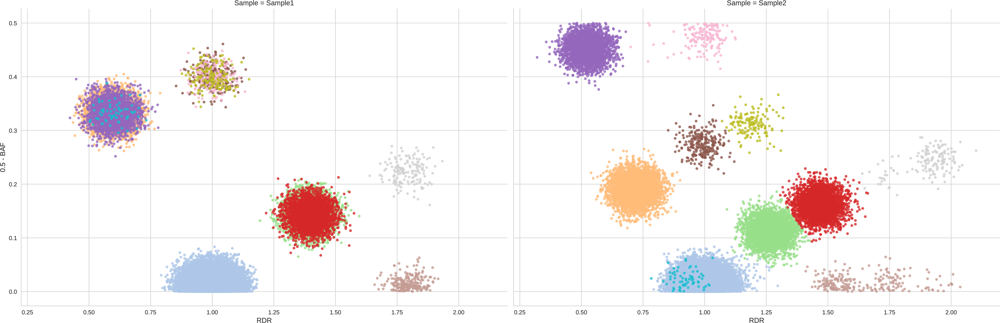
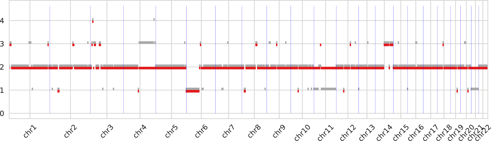
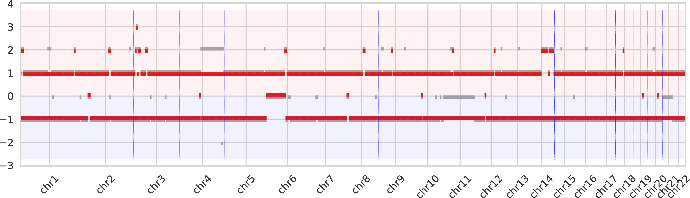
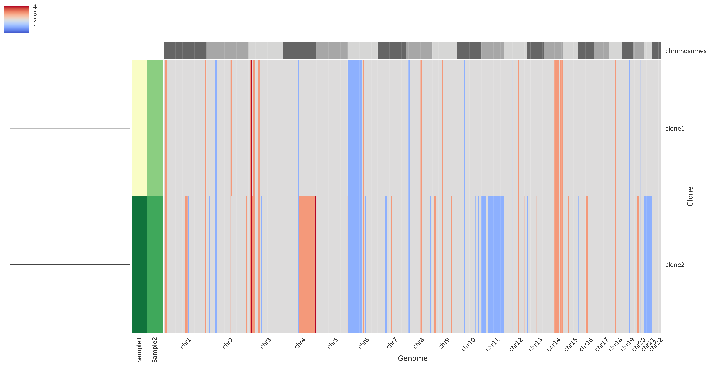

Demo of the custom pipeline for GATK4 CNV data¶
: ex: set ft=markdown ;:<<’```shell’ # This line makes this file both a guieded and executable DEMO. The file can be both displayed as a Markdown file, where to read the instructions and descriptions of the demo and results, and a BASH script, which can be directly executed with BASH to execute the demo after setting the first requirements.
The following HATCHet’s demo represents a guided example of the custom pipeline designed to start from the data produced by the GATK4 CNV pipeline. This custom pipeline considers one or more tumor samples from the same patient which have been segmented through the GATK4 CNV pipeline, such that for each sample a segmented file is available. The expected format of each segmented file is first described in the following section. Next, the requirements for this demo are described and the guided demo is detailed across the different steps.
Input format¶
Ths GATK4 CNV pipeline takes in input segmented files for one or more tumor samples from the same patient. Each segmented file is a tab-separated file with the following header subsequently followed by the specified fields:
HEADER: The header is composed of lines starting with the symbol
@which provide several details concerning the sample and are ignored by this pipeline.Fields: The fields contain the the segments and the related data; in particular, the first line specified the name of the fields starting with the word
CONTIGand next each line corresponds to a different segments. The fields are the following:
| Field | Description | USED/IGNORED |
|---|---|---|
CONTIG |
Name of a chromosome | USED |
START |
Start genomic position of segment | USED |
END |
End genomic positon of segment | USED |
NUM_POINTS_COPY_RATIO |
Number of points used to estimate RDR | IGNORED |
NUM_POINTS_ALLELE_FRACTION |
Number of points used to estimate BAF | IGNORED |
LOG2_COPY_RATIO_POSTERIOR_10 |
RDR posterior 10 | IGNORED |
LOG2_COPY_RATIO_POSTERIOR_50 |
Estimated RDR | USED |
LOG2_COPY_RATIO_POSTERIOR_90 |
RDR posterior 90 | IGNORED |
MINOR_ALLELE_FRACTION_POSTERIOR_10 |
BAF posterior 10 | IGNORED |
MINOR_ALLELE_FRACTION_POSTERIOR_50 |
Estimated BAF | USED |
MINOR_ALLELE_FRACTION_POSTERIOR_90 |
BAF posterior 90 | IGNORED |
Two example segmented files in this format for two tumor samples from the same patient are included with this demo as sample1.GATK4.CNV.seg and sample2.GATK4.CNV.seg.
Requirements and set up¶
The demo requires that HATCHet has been succesfully compiled and all the dependencies are available and functional. As such, the demo requires the user to properly set up the following paths:
PY="python3" # This id the full path to the version of PYTHON3 which contains the required modules. When this corresponds to the standard version, the user can keep the given value of `python3`
:<<'```shell' # Ignore this line
The following paths are consequently obtained to point to the required components of HATCHet
CLUSTERBINS="${PY} -m hatchet cluster-bins"
PLOTBINS="${PY} -m hatchet plot-bins"
INFER="${PY} -m hatchet solve"
PLOTCN="${PY} -m hatchet plot-cn"
GATK4CNSTOBB="${PY} gatk4cnsToBB.py"
:<<'```shell' # Ignore this line
We also ask the demo to terminate in case of errors and to print a trace of the execution by the following commands
set -e
set -o xtrace
PS4='[\t]'
:<<'```shell' # Ignore this line
Generating input BB file¶
The first step of this custom pipeline aims to generate an input BB file for HATCHet starting from the given segmented files; in this case, we consider the two examples included with this demo sample1.GATK4.CNV.seg and sample2.GATK4.CNV.seg. The corresponding BB file can be easily obtained by using the custom python script gatk4cnsToBB.py included in the custom pipeline. We apply the script by specifiying the two segmented files in a white-sperated list between apices and specifying the names of the samples in the same order with --samples. In addition, we consider the default values of the parameters and we run it as follows:
${GATK4CNSTOBB} "sample1.GATK4.CNV.seg sample2.GATK4.CNV.seg" --samples "Sample1 Sample2" > samples.GATK4.CNV.bb
:<<'```shell' # Ignore this line
In addition, one could consider different size of the resulting bins by using the option -b, e.g. -b 10kb.
Global custering¶
Having the input BB file, we can continue by executing the standard HATCHet pipeline and skipping the pre-processing steps (count-reads, count-alleles, and combine-counts). As such, the next main step of the demo performs the global clustering of HATCHet where genomic bins which have the same copy-number state in every tumor clone are clustered correspondingly. To do this, we use cluster-bins, i.e. the HATCHet’s component designed for this purpose. At first, we attempt to run the clustering using the default values of the parameters as follows:
${CLUSTERBINS} samples.GATK4.CNV.bb -o samples.GATK4.CNV.seg -O samples.GATK4.CNV.bbc -e 12 -tB 0.03 -tR 0.15 -d 0.08
:<<'```shell' # Ignore this line
To assess the quality of the clustering we generate the cluster plot using the CBB command of plot-bins, i.e. the HATCHet’s component designed for the analysis of the data. For simplicity, we also use the following option -tS 0.001 which asks to plot only the clusters which cover at least the 0.1% of the genome. This is useful to clean the figure and focus on the main components.
${PLOTBINS} -c CBB samples.GATK4.CNV.bbc -tS 0.001
:<<'```shell' # Ignore this line
We thus obtain the following clustering:

We can easily notice that the clustering is good and not tuning is needed as every pair of clusters is clearly distinct in one of the two dimensions (RDR and BAF) in at least one sample.
hatchet’s step¶
Next we apply hatchet, i.e. the component of HATCHet which estimates fractional copy numbers, infers allele-and-clone specific copy numbers, and jointly predicts the number of clones (including the normal clone) and the presence of a WGD.
We apply the last step with default parameters and, for simplicity of this demo, we consider 6 clones, which can be easily considered by HATCHet in this case, and we only consider 100 restarts for the coordinate-descent method; these are the number of attempts to find the best solution. This number is sufficient in this small example but we reccommend to use at least 400 restarts in standard runs.
${INFER} -i samples.GATK4.CNV -n2,6 -p 100 -v 2 -u 0.03 -r 12 -eD 6 -eT 12 -l 0.6 |& tee hatchet.log
:<<'```shell' # Ignore this line
We obtain the following summary of results:
# Selecting best solution
## Scores approximating second derivative for diploid results
## Diploid with 2 clones - OBJ: 5.145092 - score: -0.61889027446
## Diploid with 3 clones - OBJ: 0.417317 - score: 0.345368628644
## Diploid with 4 clones - OBJ: 0.311055 - score: -0.052709774101
## Diploid with 5 clones - OBJ: 0.215455 - score: 0.208536290615
## Diploid with 6 clones - OBJ: 0.194167 - score: -0.201195145158
## Scores approximating second derivative for tetraploid results
## Tetraploid with 2 clones - OBJ: 13.22581 - score: -0.647943150552
## Tetraploid with 3 clones - OBJ: 0.688494 - score: 0.198212911078
## Tetraploid with 4 clones - OBJ: 0.411866 - score: 0.230287135053
## Tetraploid with 5 clones - OBJ: 0.341231 - score: 0.171499953868
## Tetraploid with 6 clones - OBJ: 0.34156 - score: -0.3
# The chosen diploid solution has 3 clones with OBJ: 0.417317 and score: 0.345368628644
## The related-diploid resulting files are copied to ./chosen.diploid.bbc.ucn and ./chosen.diploid.seg.ucn
# The chosen tetraploid solution has 4 clones with OBJ: 0.411866 and score: 0.230287135053
## The related-tetraploid resulting files are copied to ./chosen.tetraploid.bbc.ucn and ./chosen.tetraploid.seg.ucn
# The chosen solution is diploid with 3 clones and is written in ./best.bbc.ucn and ./best.seg.ucn
HATCHet predicts the presence of 3 clones in the 2 tumor samples and, especially, predicts that a sample contains two distinct tumor clones, according to the true clonal composition, and one of these clones is shared with the other sample.
Analyzing inferred results¶
Finally, we obtain useful plots to summarize and analyze the inferred results by using plot-cn, which is the last component of HATCHet. We run plot-cn as follows
${PLOTCN} best.bbc.ucn
exit $?
First, plot-cn summarizes the values of tumor purity and tumor ploidy for every sample of the patient as follows:
### SAMPLE: Sample1 -- PURITY: 0.799622 -- PLOIDY: 2.00463946866 -- CLASSIFICATION: DIPLOID
### SAMPLE: Sample2 -- PURITY: 0.948195 -- PLOIDY: 2.01049490767 -- CLASSIFICATION: DIPLOID
Next, plot-cn produces some informative plots to evaluate the inferred results. Among all the plots, 3 of those are particularly interesting.
The first intratumor-clones-totalcn.pdf represents the total-copy numbers for all tumor clones in fixed-size regions (obtained by merging neighboring genomic bins).

Every tumor clone is identified by a color and a dot is drawn for every genomic region (which are partitioned) for the corresponding total copy number.
The second intratumor-clones-allelecn.pdf similarly represents the allele-specific copy numbers (split between the bottom and top regions of the figure) as the plot above.

The third intratumor-profiles.pdf represents both the clone proportions and the total copy numbers of every clone in genomic regions.

The main heatmap in the right side of the figure represent the total copy number of every clone (i.e. a row) for every genomic region (which are partition into chromosomes as described at the top of the heatmap) such that grey color indicate regions with base copy number not affected by CNAs (but they can be affected by a WGD when this occurrs), blue colors indicates deletions, and red colors indicate amplifications; in general, the stronger the color the smaller/higher the corresponding aberration. The smaller heatmap in the left side describes the clone proportion of each clone in each sample such that the lightest color correspond to absence while darker colors indicate higher clone proportions. Last, in the left-most part there is a dendogram which hierarchically clusters the tumor clones based on similiraity.